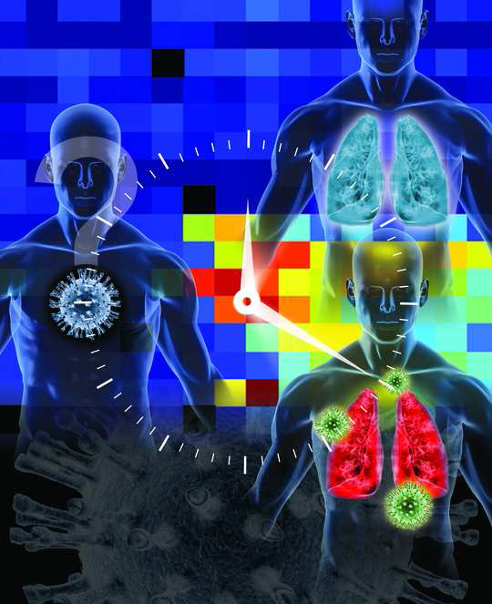

Bayesian methods for gene expression factor analysis
Summary
In the past few years, genomics has received growing interest, particularly since the map of the human genome was completed in early 2000's. Currently, medical teams are facing a new challenge: processing the signals issued by DNA chips. These signals, often of voluminous size, allow one to discover the level of a gene expression in a given tissue at any time. For example, to detect or prevent a disease in a group of observed patients based on gene expression levels innovative methods are needed to analyze the information provided by these chips.
One important problem is the identification of the specific temporal gene expression profiles of host response to a pathogen. In this problem, sensitive methods are needed that can reveal subtle and elusive expression patterns. One particularly promising approach are dimensionality reduction methods that decompose these signals into elementary patterns according to a linear mixing model. For example, PCA, ICA and manifold learning are such approaches. We propose to develop Bayesian decomposition algorithms to identify relevant biomarkers and estimate their levels of expression. The work is based on the experience of the SC team on Bayesian statistical modeling, as well as the use of stochastic simulation methods, which have already been demonstrated for other applications (including hyperspectral imaging). Moreover, when analyzing DNA data, a crucial issue is the reduction of dimensionality of the signals to be processed. Consequently, a particular interest is devoted to developing appropriate methods for sparse analysis and variable selection.
Fig. 1.: From [Huang et al., 2011].
Collaborations
This work is carried out in collaboration with the team of Prof. Alfred O. Hero (University of Michigan, USA). The quality of the research conducted by Prof. Hero in biostatistics is a significant support. The methods developed are evaluated on real signals, collected during a recent viral challenge study (2008) conducted on volunteers.
Prof. Hero's activities are in part funded by the DARPA program Predicting Health and Disease (PHD). The collaborators involved in this projet are :
- Prof. Alfred O. Hero (Department of EECS, University of Michigan),
- Dr. Aimee K. Zaas (Duke Division of Infectious Diseases, Duke University),
- Dr. Geoffrey S. Ginsburg (Duke Institute for Genome Sciences and Policy, Duke University).
Main results
The Bayesian factor analysis algorithm, called BLU, initially proposed in [Dobigeon et al., 2009] to analyze hyperspectral data, is described in the paper published in BMC Bioinformatics:
The Matlab code is available here:
- matlab codes
 [ .zip - 17 ko ].
[ .zip - 17 ko ].
It has been successfully used during the study whose results are reported in the paper published in PLoS Genetics (Aug. 2011):
- article:
 .
.
Check also the "reproductible research" webpage associated with the PLoS Genetics paper:
Press releases and a press review regarding this work are available online:
Some extensions/developments of BLU have been proposed in 2 conference papers: